Change analysis for Eswatini for PRIMAP-hist v2.8_final compared to
v2.7_final
This changelog is published under the creative commons non-commercial
share alike license. For more information see creativecommons.org.
Overview over
emissions by sector and gas
The following figures show the aggregate national total emissions
excluding LULUCF AR6GWP100 for the country reported priority scenario.
The dotted lines show the v2.7_final data.
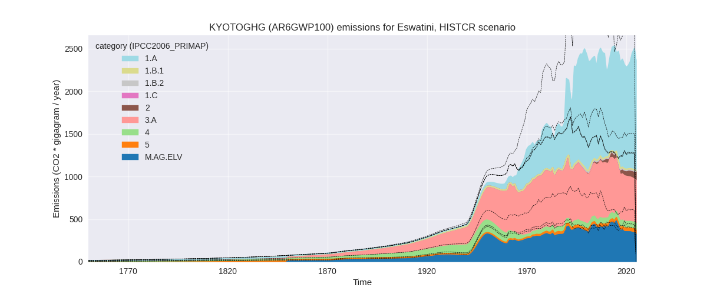
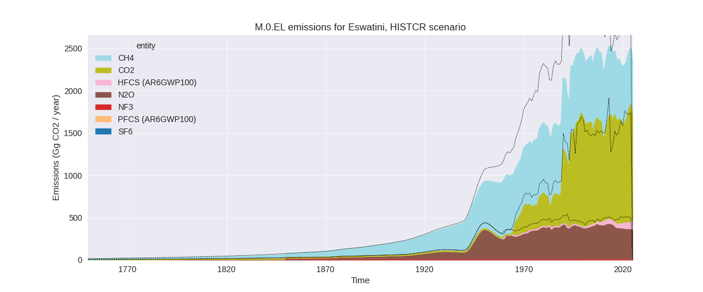
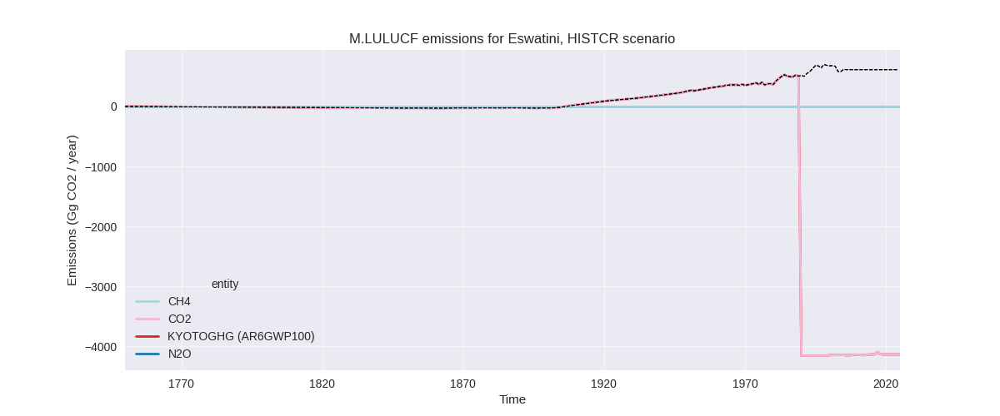
The following figures show the aggregate national total emissions
excluding LULUCF AR6GWP100 for the third party priority scenario. The
dotted lines show the v2.7_final data.
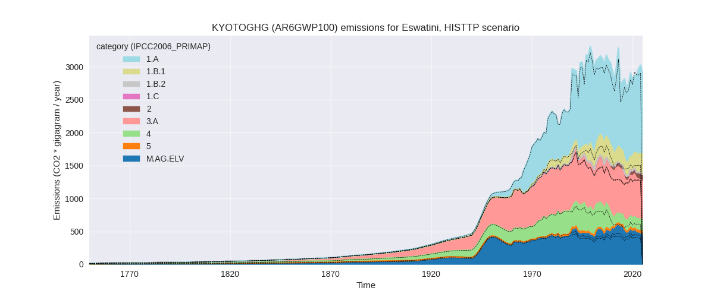
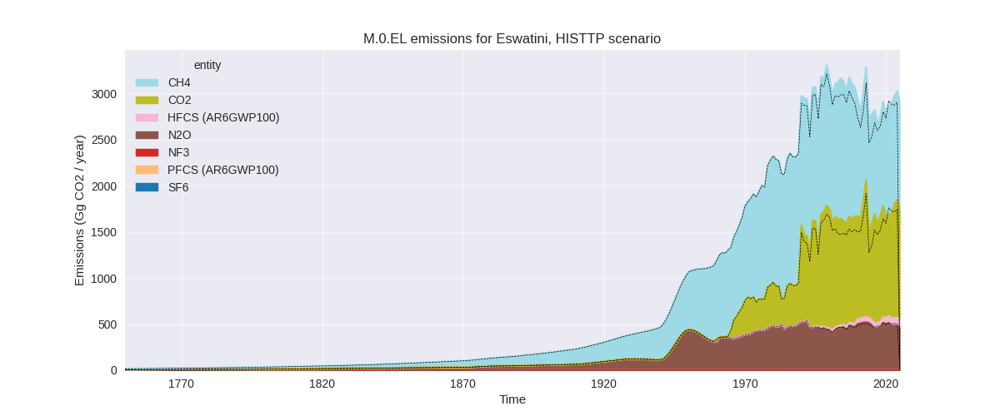
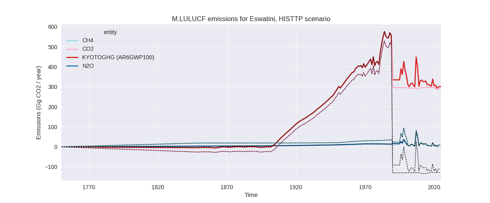
Used country reported data
The changelog with this information is available upon request for
non-commercial customers. Paying commercial customers will be provided
with the information.
Overview over changes
In the country reported priority scenario we have the following
changes for aggregate Kyoto GHG and national total emissions excluding
LULUCF (M.0.EL):
- Emissions in 2024 have changed by -13.9%% (-402.34 Gg CO2 / year)
- Emissions in 1990-2024 have changed by -18.0%% (-516.09 Gg CO2 / year)
In the third party priority scenario we have the following changes
for aggregate Kyoto GHG and national total emissions excluding LULUCF
(M.0.EL):
- Emissions in 2024 have changed by 4.3%% (124.33 Gg CO2 / year)
- Emissions in 1990-2024 have changed by 4.0%% (115.00 Gg CO2 / year)
Most
important changes per scenario and time frame
In the country reported priority scenario the
following sector-gas combinations have the highest absolute impact on
national total KyotoGHG (AR6GWP100) emissions in 2024
(up to 10 with either at least 0.2% impact on total emissions or at
least 20% change):
- 1: 1.B.1, CH4 with -223.08 Gg CO2 / year (-100.0%, -7.7%)
- 2: 3.A, CH4 with -164.73 Gg CO2 / year (-25.2%, -5.7%)
- 3: M.AG.ELV, N2O with -133.01 Gg CO2 / year (-35.3%, -4.6%)
- 4: M.AG.ELV, CO2 with 91.23 Gg CO2 / year (inf%, 3.1%)
- 5: 2, HFCS (AR6GWP100) with 89.75 Gg CO2 / year (inf%, 3.1%)
- 6: 4, CH4 with -81.50 Gg CO2 / year (-53.2%, -2.8%)
- 7: 1.A, CO2 with 36.10 Gg CO2 / year (2.9%, 1.2%)
- 8: 4, N2O with -14.89 Gg CO2 / year (-92.6%, -0.5%)
- 9: M.AG.ELV, CH4 with -14.05 Gg CO2 / year (-100.0%, -0.5%)
- 10: 1.B.1, CO2 with 10.81 Gg CO2 / year (806.0%, 0.4%)
In the country reported priority scenario the
following sector-gas combinations have the highest absolute impact on
national total KyotoGHG (AR6GWP100) emissions in
1990-2024 (up to 10 with either at least 0.1% impact on
total emissions or at least 10% change):
- 1: 1.B.1, CH4 with -219.76 Gg CO2 / year (-100.0%, -7.7%)
- 2: 4, CH4 with -202.47 Gg CO2 / year (-76.8%, -7.1%)
- 3: M.AG.ELV, CO2 with 96.84 Gg CO2 / year (inf%, 3.4%)
- 4: M.AG.ELV, N2O with -81.03 Gg CO2 / year (-21.7%, -2.8%)
- 5: 3.A, CH4 with -65.96 Gg CO2 / year (-9.9%, -2.3%)
- 6: 1.A, CH4 with -38.75 Gg CO2 / year (-25.7%, -1.4%)
- 7: 2, HFCS (AR6GWP100) with 36.51 Gg CO2 / year (inf%, 1.3%)
- 8: M.AG.ELV, CH4 with -27.99 Gg CO2 / year (-100.0%, -1.0%)
- 9: 1.A, CO2 with -20.16 Gg CO2 / year (-1.9%, -0.7%)
- 10: 4, N2O with -11.13 Gg CO2 / year (-91.8%, -0.4%)
In the third party priority scenario the following
sector-gas combinations have the highest absolute impact on national
total KyotoGHG (AR6GWP100) emissions in 2024 (up to 10
with either at least 0.2% impact on total emissions or at least 20%
change):
- 1: M.AG.ELV, CO2 with 91.23 Gg CO2 / year (inf%, 3.1%)
- 2: 2, HFCS (AR6GWP100) with 89.75 Gg CO2 / year (inf%, 3.1%)
- 3: 3.A, CH4 with -72.09 Gg CO2 / year (-11.0%, -2.5%)
- 4: 1.B.1, CH4 with 65.35 Gg CO2 / year (29.3%, 2.3%)
- 5: 1.A, CO2 with -60.64 Gg CO2 / year (-4.9%, -2.1%)
- 6: M.AG.ELV, N2O with -30.53 Gg CO2 / year (-8.1%, -1.1%)
- 7: 1.A, CH4 with 10.86 Gg CO2 / year (9.6%, 0.4%)
- 8: M.AG.ELV, CH4 with 9.71 Gg CO2 / year (69.1%, 0.3%)
- 9: 5, N2O with 6.53 Gg CO2 / year (16.0%, 0.2%)
- 10: 4, CO2 with 6.37 Gg CO2 / year (inf%, 0.2%)
In the third party priority scenario the following
sector-gas combinations have the highest absolute impact on national
total KyotoGHG (AR6GWP100) emissions in 1990-2024 (up
to 10 with either at least 0.1% impact on total emissions or at least
10% change):
- 1: M.AG.ELV, CO2 with 96.84 Gg CO2 / year (inf%, 3.4%)
- 2: 2, HFCS (AR6GWP100) with 36.51 Gg CO2 / year (inf%, 1.3%)
- 3: 1.A, CO2 with -28.00 Gg CO2 / year (-2.7%, -1.0%)
- 4: 1.B.1, CH4 with 6.44 Gg CO2 / year (2.9%, 0.2%)
- 5: 3.A, CH4 with -5.59 Gg CO2 / year (-0.8%, -0.2%)
- 6: 4, CO2 with 5.38 Gg CO2 / year (inf%, 0.2%)
- 7: M.AG.ELV, N2O with -3.97 Gg CO2 / year (-1.1%, -0.1%)
- 8: 2, SF6 with 1.31 Gg CO2 / year (inf%, 0.0%)
Notes on data changes
The changelog with this information is available upon request for
non-commercial customers. Paying commercial customers will be provided
with the information.
Changes by sector and gas
For each scenario and time frame the changes are displayed for all
individual sectors and all individual gases. In the sector plot we use
aggregate Kyoto GHGs in AR6GWP100. In the gas plot we usenational total
emissions without LULUCF.
country reported scenario
2024
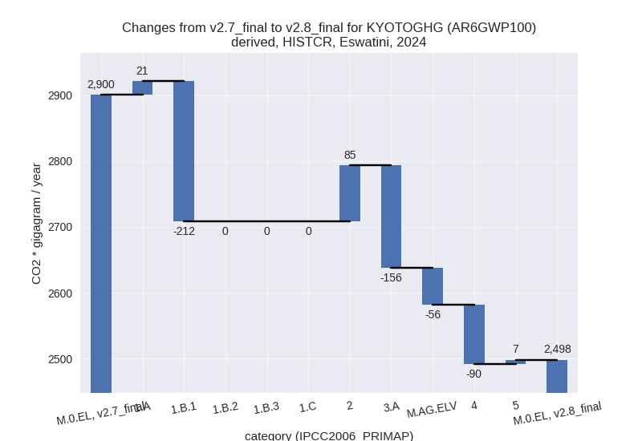
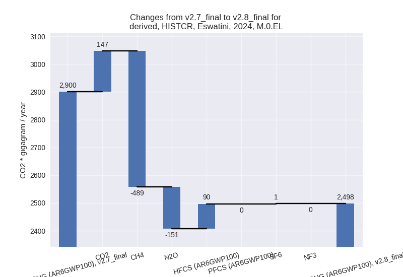
1990-2024
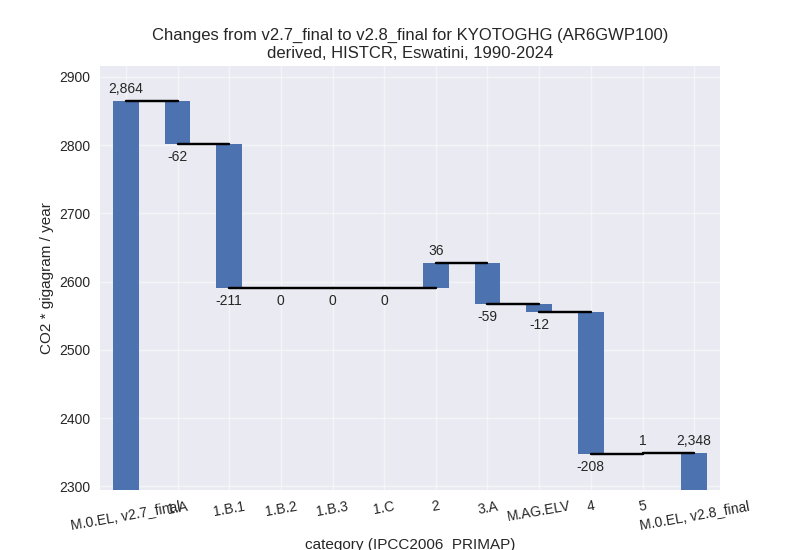
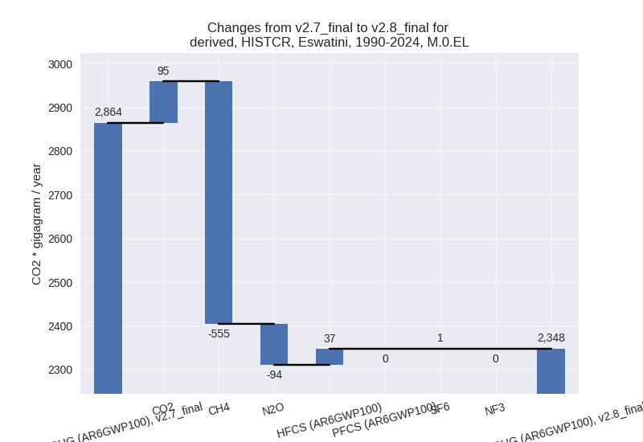
third party scenario
2024
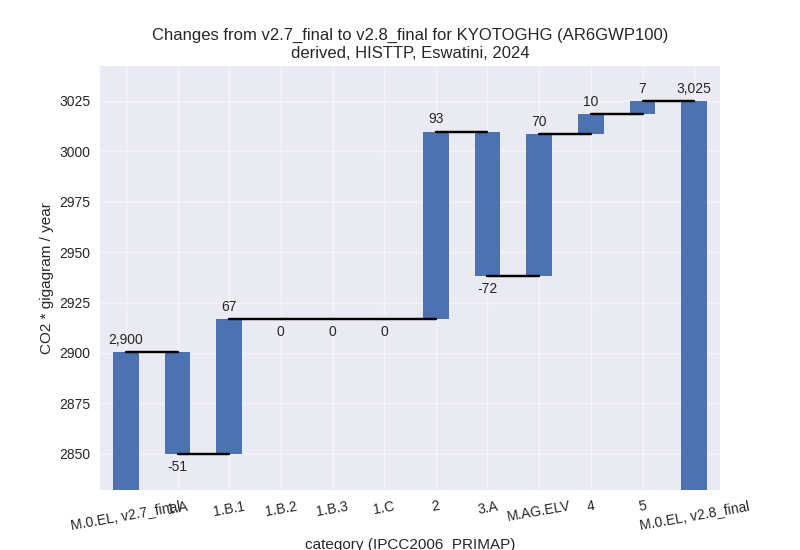
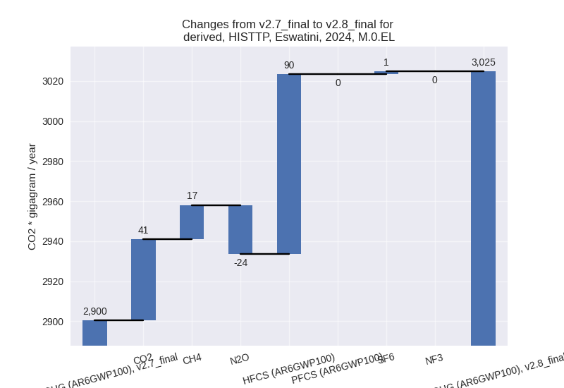
1990-2024
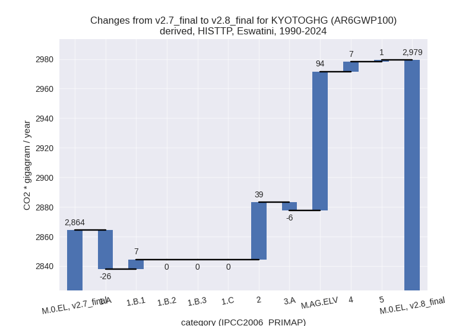
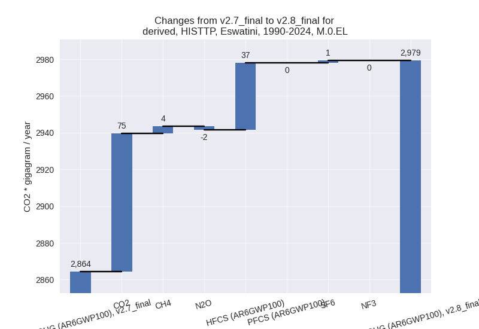
Detailed changes for the
scenarios:
country reported scenario
(HISTCR):
Most important changes
per time frame
For 2024 the following sector-gas combinations have
the highest absolute impact on national total KyotoGHG (AR6GWP100)
emissions in 2024 (up to 20 with either at least 0.2%
impact on total emissions or at least 20% change):
- 1: 1.B.1, CH4 with -223.08 Gg CO2 / year (-100.0%), -7.7%)
- 2: 3.A, CH4 with -164.73 Gg CO2 / year (-25.2%), -5.7%)
- 3: M.AG.ELV, N2O with -133.01 Gg CO2 / year (-35.3%), -4.6%)
- 4: M.AG.ELV, CO2 with 91.23 Gg CO2 / year (inf%), 3.1%)
- 5: 2, HFCS (AR6GWP100) with 89.75 Gg CO2 / year (inf%), 3.1%)
- 6: 4, CH4 with -81.50 Gg CO2 / year (-53.2%), -2.8%)
- 7: 1.A, CO2 with 36.10 Gg CO2 / year (2.9%), 1.2%)
- 8: 4, N2O with -14.89 Gg CO2 / year (-92.6%), -0.5%)
- 9: M.AG.ELV, CH4 with -14.05 Gg CO2 / year (-100.0%), -0.5%)
- 10: 1.B.1, CO2 with 10.81 Gg CO2 / year (806.0%), 0.4%)
- 11: 1.A, N2O with -9.40 Gg CO2 / year (-18.7%), -0.3%)
- 12: 3.A, N2O with 8.58 Gg CO2 / year (105.8%), 0.3%)
- 13: 2, N2O with -8.39 Gg CO2 / year (-99.5%), -0.3%)
- 14: 5, N2O with 6.53 Gg CO2 / year (16.0%), 0.2%)
- 15: 4, CO2 with 6.37 Gg CO2 / year (inf%), 0.2%)
- 16: 1.A, CH4 with -6.09 Gg CO2 / year (-5.4%), -0.2%)
- 17: 2, CO2 with 2.13 Gg CO2 / year (92.7%), 0.1%)
- 18: 2, SF6 with 1.31 Gg CO2 / year (inf%), 0.0%)
For 1990-2024 the following sector-gas combinations
have the highest absolute impact on national total KyotoGHG (AR6GWP100)
emissions in 1990-2024 (up to 20 with either at least
0.1% impact on total emissions or at least 10% change):
- 1: 1.B.1, CH4 with -219.76 Gg CO2 / year (-100.0%), -7.7%)
- 2: 4, CH4 with -202.47 Gg CO2 / year (-76.8%), -7.1%)
- 3: M.AG.ELV, CO2 with 96.84 Gg CO2 / year (inf%), 3.4%)
- 4: M.AG.ELV, N2O with -81.03 Gg CO2 / year (-21.7%), -2.8%)
- 5: 3.A, CH4 with -65.96 Gg CO2 / year (-9.9%), -2.3%)
- 6: 1.A, CH4 with -38.75 Gg CO2 / year (-25.7%), -1.4%)
- 7: 2, HFCS (AR6GWP100) with 36.51 Gg CO2 / year (inf%), 1.3%)
- 8: M.AG.ELV, CH4 with -27.99 Gg CO2 / year (-100.0%), -1.0%)
- 9: 1.A, CO2 with -20.16 Gg CO2 / year (-1.9%), -0.7%)
- 10: 4, N2O with -11.13 Gg CO2 / year (-91.8%), -0.4%)
- 11: 1.B.1, CO2 with 8.80 Gg CO2 / year (338.9%), 0.3%)
- 12: 3.A, N2O with 6.86 Gg CO2 / year (90.7%), 0.2%)
- 13: 2, N2O with -6.43 Gg CO2 / year (-99.4%), -0.2%)
- 14: 4, CO2 with 5.38 Gg CO2 / year (inf%), 0.2%)
- 15: 2, CO2 with 4.15 Gg CO2 / year (172.5%), 0.1%)
- 16: 1.A, N2O with -3.33 Gg CO2 / year (-8.0%), -0.1%)
- 17: 2, SF6 with 1.31 Gg CO2 / year (inf%), 0.0%)
Changes in the main sectors for aggregate KyotoGHG (AR6GWP100)
are
- 1: Total sectoral emissions in 2022 are 1268.33 Gg
CO2 / year which is 54.1% of M.0.EL emissions. 2024 Emissions have
changed by -11.8% (-191.66 Gg CO2 /
year). 1990-2024 Emissions have changed by -18.6% (-273.20 Gg CO2 / year). For 2024
the changes per gas
are:
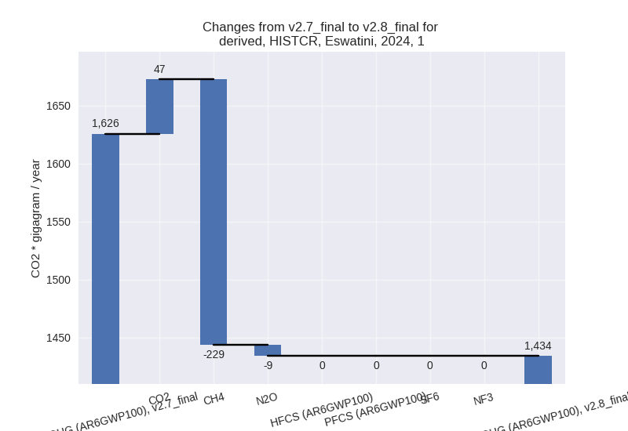
For 1990-2024 the changes per gas
are:
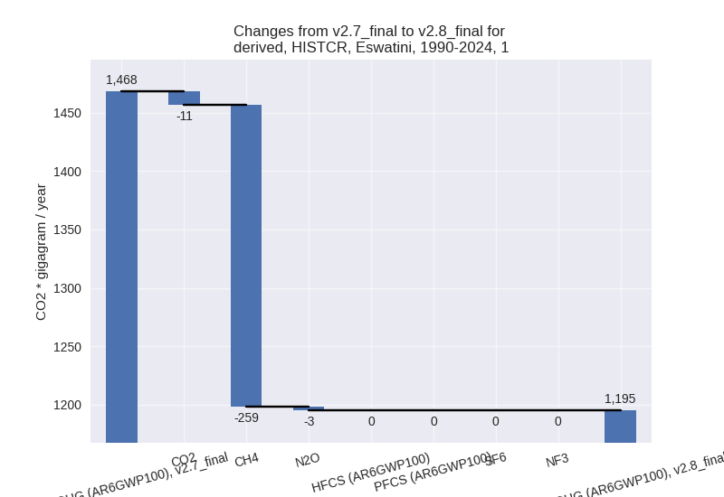
The changes come from the following subsectors:
- 1.A: Total sectoral emissions in 2022 are 1254.24
Gg CO2 / year which is 98.9% of category 1 emissions. 2024 Emissions
have changed by 1.5% (20.61 Gg CO2 /
year). 1990-2024 Emissions have changed by -5.0% (-62.24 Gg CO2 / year). For
1990-2024 the changes per gas
are:
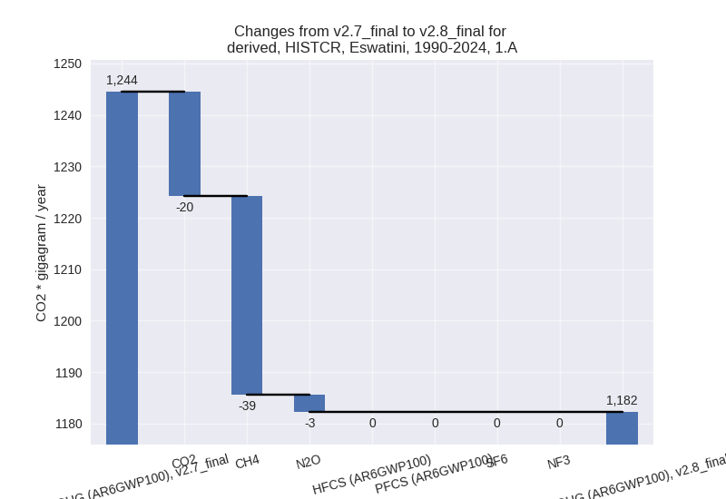
There is no subsector information available in PRIMAP-hist.
- 1.B.1: Total sectoral emissions in 2022 are 14.09
Gg CO2 / year which is 1.1% of category 1 emissions. 2024 Emissions have
changed by -93.7% (-212.27 Gg CO2 /
year). 1990-2024 Emissions have changed by -94.3% (-210.96 Gg CO2 / year). For 2024
the changes per gas
are:
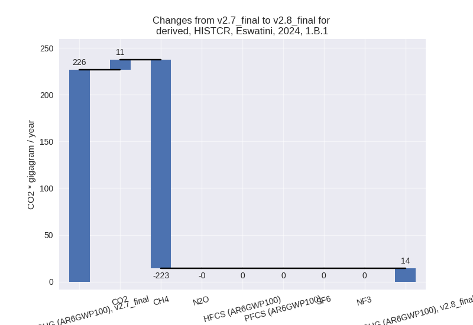
For 1990-2024 the changes per gas
are:
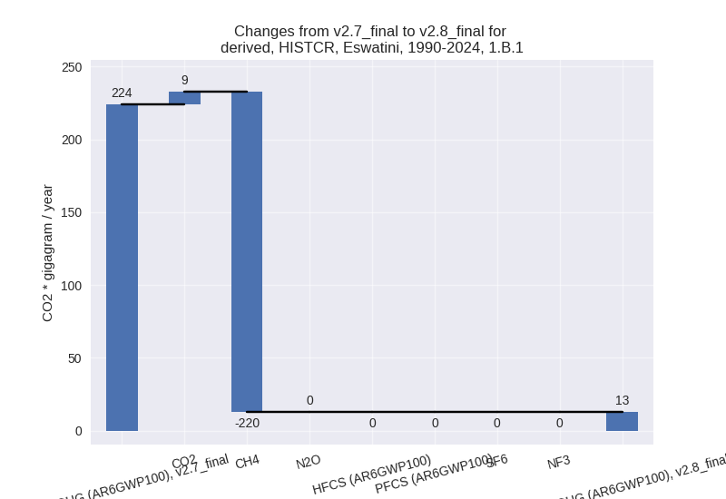
There is no subsector information available in PRIMAP-hist.
- 2: Total sectoral emissions in 2022 are 84.09 Gg
CO2 / year which is 3.6% of M.0.EL emissions. 2024 Emissions have
changed by 790.5% (84.80 Gg CO2 /
year). 1990-2024 Emissions have changed by 400.5% (35.54 Gg CO2 / year). For 2024 the
changes per gas
are:
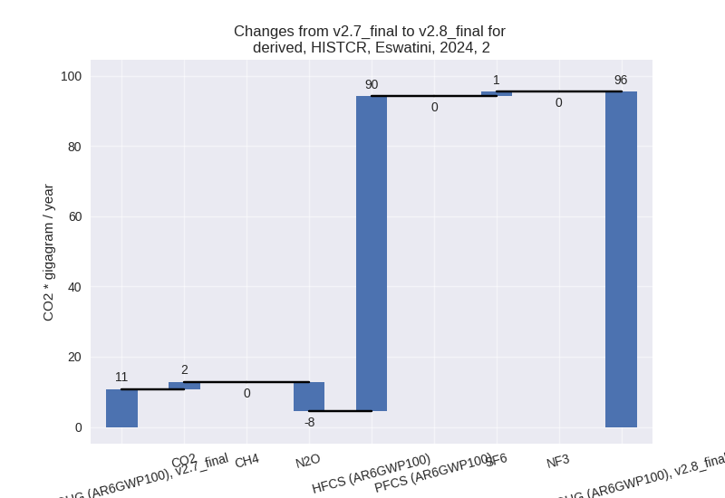
For 1990-2024 the changes per gas
are:
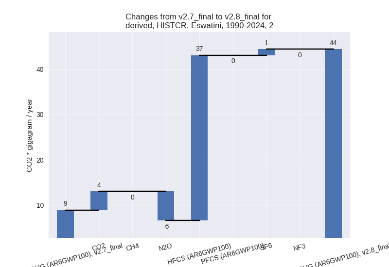
- M.AG: Total sectoral emissions in 2022 are 872.05
Gg CO2 / year which is 37.2% of M.0.EL emissions. 2024 Emissions have
changed by -20.1% (-211.99 Gg CO2 /
year). 1990-2024 Emissions have changed by -6.6% (-71.27 Gg CO2 / year). For 2024 the
changes per gas
are:
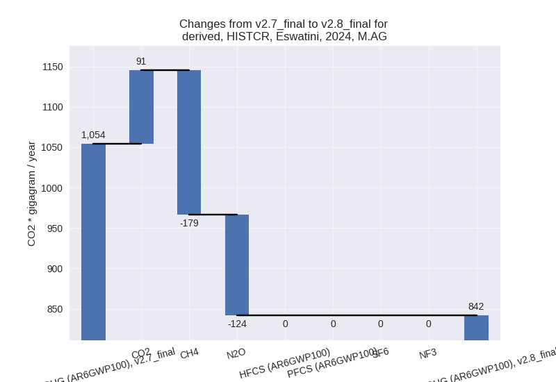
For 1990-2024 the changes per gas
are:
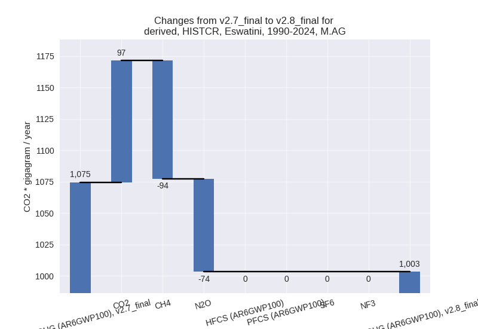
The changes come from the following subsectors:
- 3.A: Total sectoral emissions in 2022 are 522.67 Gg
CO2 / year which is 59.9% of category M.AG emissions. 2024 Emissions
have changed by -23.6% (-156.15 Gg
CO2 / year). 1990-2024 Emissions have changed by -8.8% (-59.10 Gg CO2 / year). For 2024 the
changes per gas
are:
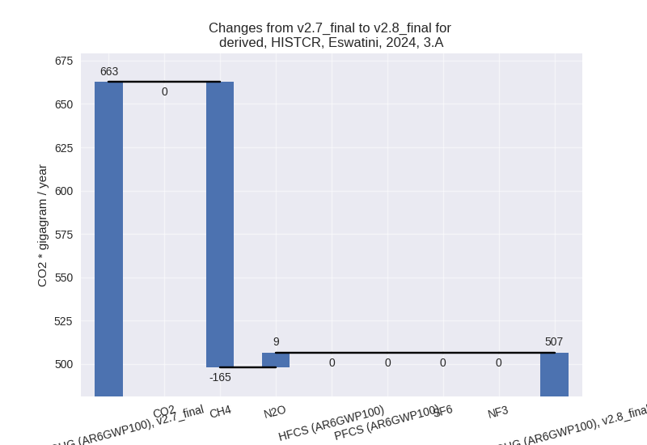
For 1990-2024 the changes per gas
are:
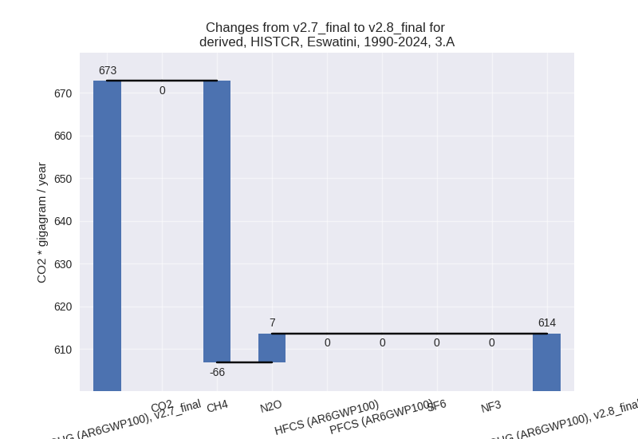
There is no subsector information available in PRIMAP-hist.
- M.AG.ELV: Total sectoral emissions in 2022 are
349.38 Gg CO2 / year which is 40.1% of category M.AG emissions. 2024
Emissions have changed by -14.3%
(-55.84 Gg CO2 / year). 1990-2024 Emissions have changed by -3.0% (-12.17 Gg CO2 / year). For 2024 the
changes per gas
are:
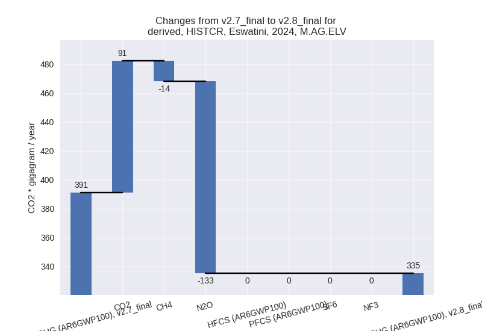
For 1990-2024 the changes per gas
are:
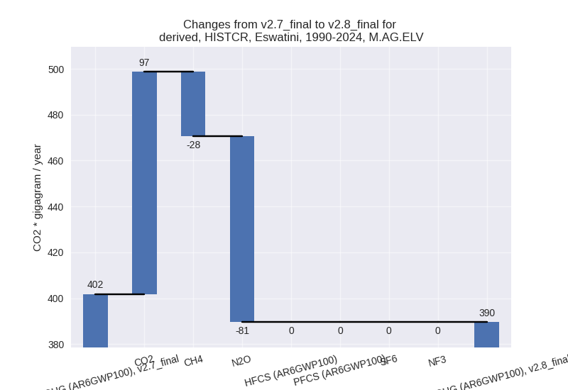
There is no subsector information available in PRIMAP-hist.
- 4: Total sectoral emissions in 2022 are 77.99 Gg
CO2 / year which is 3.3% of M.0.EL emissions. 2024 Emissions have
changed by -53.2% (-90.02 Gg CO2 /
year). 1990-2024 Emissions have changed by -75.5% (-208.23 Gg CO2 / year). For 2024
the changes per gas
are:
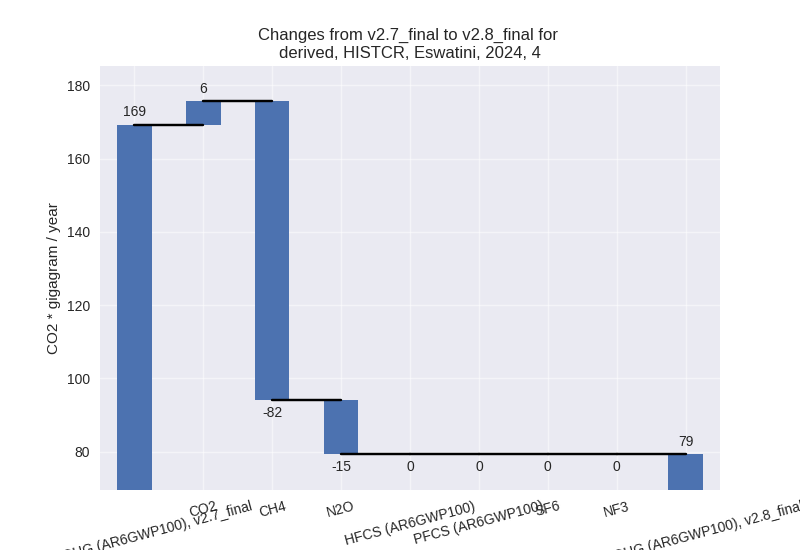
For 1990-2024 the changes per gas
are:
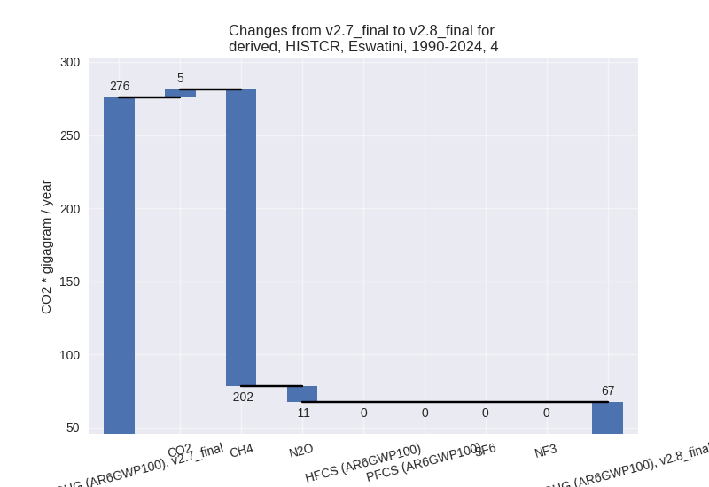
- 5: Total sectoral emissions in 2022 are 42.74 Gg
CO2 / year which is 1.8% of M.0.EL emissions. 2024 Emissions have
changed by 16.0% (6.53 Gg CO2 /
year). 1990-2024 Emissions have changed by 2.9% (1.08 Gg CO2 / year). For 2024 the
changes per gas
are:
For 1990-2024 the changes per gas
are:
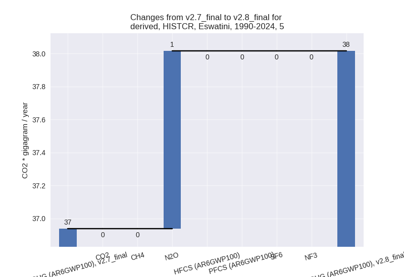
third party scenario (HISTTP):
Most important changes
per time frame
For 2024 the following sector-gas combinations have
the highest absolute impact on national total KyotoGHG (AR6GWP100)
emissions in 2024 (up to 20 with either at least 0.2%
impact on total emissions or at least 20% change):
- 1: M.AG.ELV, CO2 with 91.23 Gg CO2 / year (inf%), 3.1%)
- 2: 2, HFCS (AR6GWP100) with 89.75 Gg CO2 / year (inf%), 3.1%)
- 3: 3.A, CH4 with -72.09 Gg CO2 / year (-11.0%), -2.5%)
- 4: 1.B.1, CH4 with 65.35 Gg CO2 / year (29.3%), 2.3%)
- 5: 1.A, CO2 with -60.64 Gg CO2 / year (-4.9%), -2.1%)
- 6: M.AG.ELV, N2O with -30.53 Gg CO2 / year (-8.1%), -1.1%)
- 7: 1.A, CH4 with 10.86 Gg CO2 / year (9.6%), 0.4%)
- 8: M.AG.ELV, CH4 with 9.71 Gg CO2 / year (69.1%), 0.3%)
- 9: 5, N2O with 6.53 Gg CO2 / year (16.0%), 0.2%)
- 10: 4, CO2 with 6.37 Gg CO2 / year (inf%), 0.2%)
- 11: 2, CO2 with 1.97 Gg CO2 / year (86.1%), 0.1%)
- 12: 1.B.1, CO2 with 1.57 Gg CO2 / year (116.8%), 0.1%)
- 13: 2, SF6 with 1.31 Gg CO2 / year (inf%), 0.0%)
For 1990-2024 the following sector-gas combinations
have the highest absolute impact on national total KyotoGHG (AR6GWP100)
emissions in 1990-2024 (up to 20 with either at least
0.1% impact on total emissions or at least 10% change):
- 1: M.AG.ELV, CO2 with 96.84 Gg CO2 / year (inf%), 3.4%)
- 2: 2, HFCS (AR6GWP100) with 36.51 Gg CO2 / year (inf%), 1.3%)
- 3: 1.A, CO2 with -28.00 Gg CO2 / year (-2.7%), -1.0%)
- 4: 1.B.1, CH4 with 6.44 Gg CO2 / year (2.9%), 0.2%)
- 5: 3.A, CH4 with -5.59 Gg CO2 / year (-0.8%), -0.2%)
- 6: 4, CO2 with 5.38 Gg CO2 / year (inf%), 0.2%)
- 7: M.AG.ELV, N2O with -3.97 Gg CO2 / year (-1.1%), -0.1%)
- 8: 2, SF6 with 1.31 Gg CO2 / year (inf%), 0.0%)
- 9: 2, CO2 with 0.88 Gg CO2 / year (36.7%), 0.0%)
Changes in the main sectors for aggregate KyotoGHG (AR6GWP100)
are
- 1: Total sectoral emissions in 2022 are 1483.64 Gg
CO2 / year which is 51.5% of M.0.EL emissions. 2024 Emissions have
changed by 1.0% (16.28 Gg CO2 /
year). 1990-2024 Emissions have changed by -1.3% (-19.81 Gg CO2 / year).
- 2: Total sectoral emissions in 2022 are 92.08 Gg
CO2 / year which is 3.2% of M.0.EL emissions. 2024 Emissions have
changed by 867.3% (93.03 Gg CO2 /
year). 1990-2024 Emissions have changed by 436.1% (38.70 Gg CO2 / year). For 2024 the
changes per gas
are:
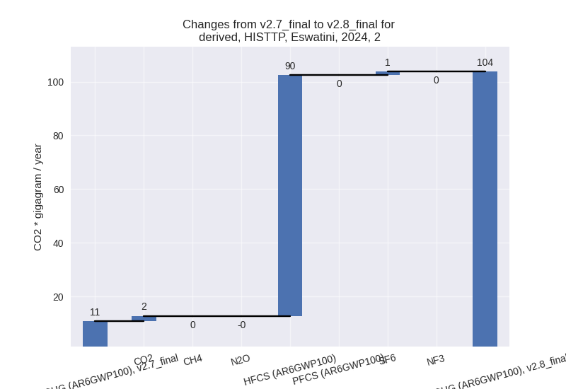
For 1990-2024 the changes per gas
are:
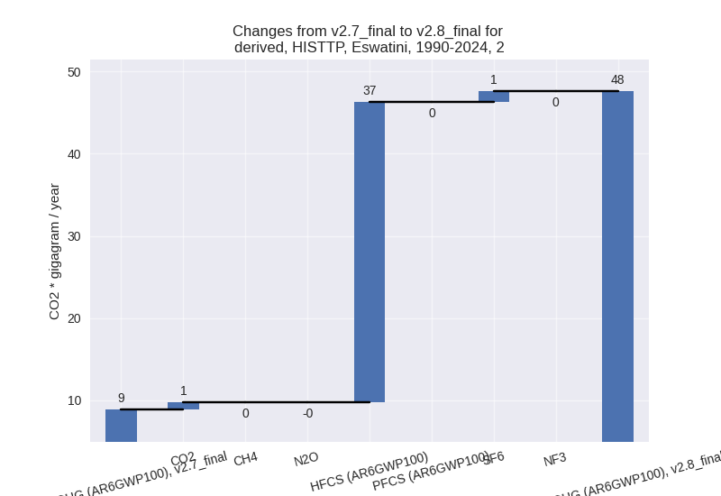
- M.AG: Total sectoral emissions in 2022 are 1086.26
Gg CO2 / year which is 37.7% of M.0.EL emissions. 2024 Emissions have
changed by -0.1% (-1.21 Gg CO2 /
year). 1990-2024 Emissions have changed by 8.2% (88.28 Gg CO2 / year). For 1990-2024
the changes per gas
are:
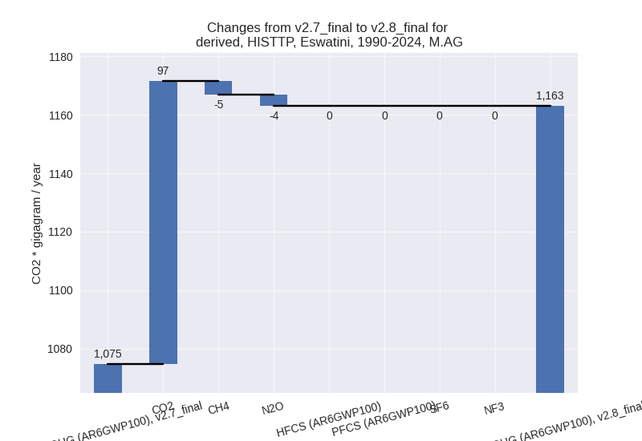
The changes come from the following subsectors:
- 3.A: Total sectoral emissions in 2022 are 610.29 Gg
CO2 / year which is 56.2% of category M.AG emissions. 2024 Emissions
have changed by -10.8% (-71.62 Gg
CO2 / year). 1990-2024 Emissions have changed by -0.8% (-5.56 Gg CO2 / year). For 2024 the
changes per gas
are:
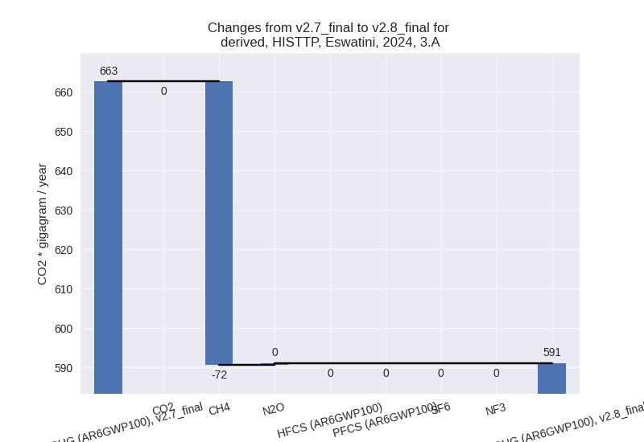
There is no subsector information available in PRIMAP-hist.
- M.AG.ELV: Total sectoral emissions in 2022 are
475.97 Gg CO2 / year which is 43.8% of category M.AG emissions. 2024
Emissions have changed by 18.0%
(70.41 Gg CO2 / year). 1990-2024 Emissions have changed by 23.4% (93.85 Gg CO2 / year). For 2024 the
changes per gas
are:
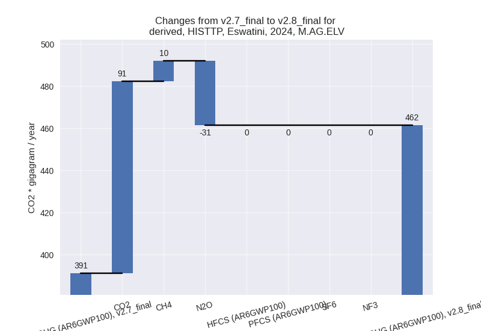
For 1990-2024 the changes per gas
are:
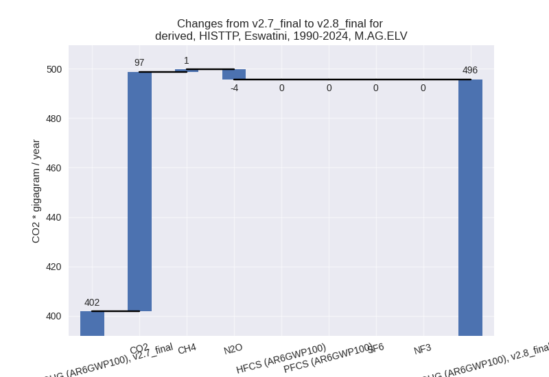
There is no subsector information available in PRIMAP-hist.
- 4: Total sectoral emissions in 2022 are 175.77 Gg
CO2 / year which is 6.1% of M.0.EL emissions. 2024 Emissions have
changed by 5.7% (9.70 Gg CO2 /
year). 1990-2024 Emissions have changed by 2.4% (6.75 Gg CO2 / year). For 2024 the
changes per gas
are:
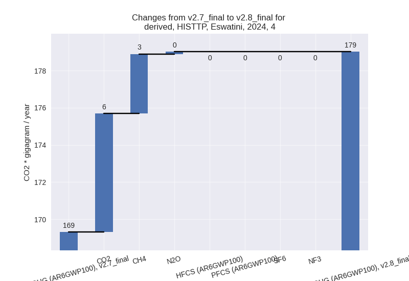
For 1990-2024 the changes per gas
are:
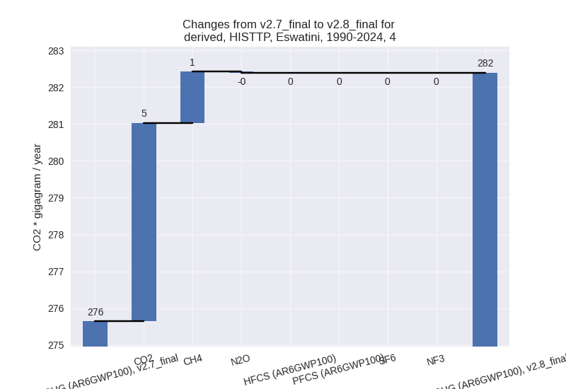
- 5: Total sectoral emissions in 2022 are 42.74 Gg
CO2 / year which is 1.5% of M.0.EL emissions. 2024 Emissions have
changed by 16.0% (6.53 Gg CO2 /
year). 1990-2024 Emissions have changed by 2.9% (1.08 Gg CO2 / year). For 2024 the
changes per gas
are:
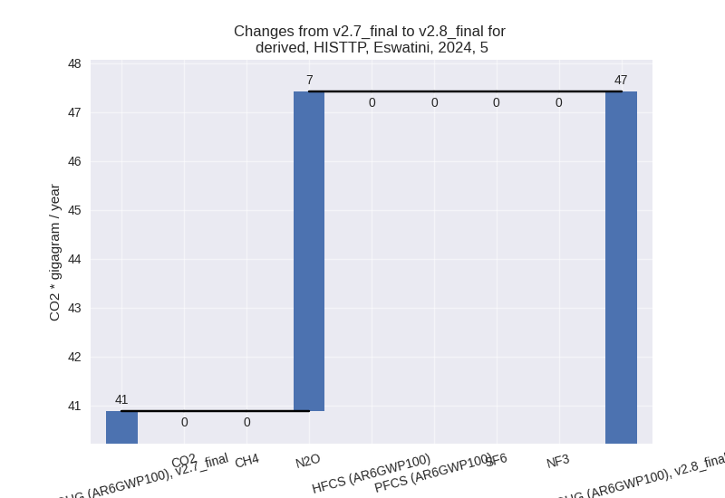
For 1990-2024 the changes per gas
are:
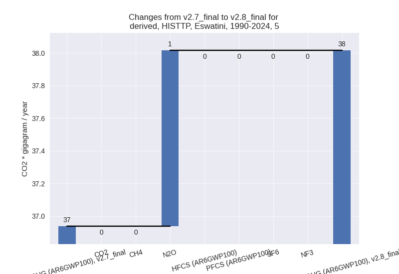